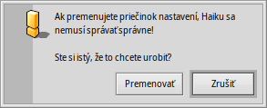
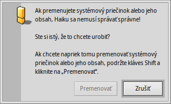

Rozloženie súborového systému Haiku
Rozloženie súborového systému Haiku je dosť zrozumiteľné a vždy sa snačí používať nekryptické názvy súborov a priečinkov, aby nemusel používateľ hádať, čo znamenajú. Súbory a priečinky, ktoré sú dôležité na správne fungovanie systému sú chránené proti neúmyselnému poškodeniu tak, že zobrazujú jednu z týchto výstrah:
 Druhá výstraha vyskočí, keď sa pokúsite premenovať alebo zmazať niečo v hierarchii system. Tu sa na tlačidlo „“ bude dať kliknúť iba ak podržíte kláves SHIFT.
Vo všeobecnosti existujú dve samostatné vetvy začínajúce v koreňovom priečinku zavádzacieho zväzku:
| /boot/system/ | Obsahuje systémové súbory a aplikácie/balíky spoločné pre všetkých používateľov systému. | |
| /boot/home/ | Toto je váš osobný priečinok, kde si uchovávate vaše dáta a nastavenia a aplikácie/balíky, ktoré nie sú spoločné pre všetkých používateľov. |
Pokým Haiku nepodporuje viacerých používateľov, toto rozlíšenie medzi zdieľanými a nezdieľanými aplikáciami je bez zjavného účinku, pretože existuje len jeden používateľ s jedným domovským priečinkom. Ale pretože nakoniec podpora viacerých používateľov bude pridaná, je rozumné naučiť sa správny spôsob hneď od začiatku.
 Systémový priečinok - /boot/system/
Systémový priečinok - /boot/system/
V predchodcovi Haiku - BeOS - sa tento priečinok nazýval /boot/beos/. Ešte stále ho môžete nájsť v staršej dokumentácii (napr. v pôvodnej BeBook).
Väčšina priečinkov v /boot/system/ je iba na čítanie, čo je rozumné, keďže obsahujú súbory nevyhnutné na správne fungovanie Haiku a preto musia byť ochránené pred neúmyselnou zmenou. Jediné priečinky, do ktorých môže používateľ zapisovať, sú:
| /boot/system/cache/ | Obsahuje súbory vo vyrovnávacej pamäti a dočasný priečinok s odkazom do /tmp/. | |
| /boot/system/non-packaged/ | Obsahuje hierarchiu súborov, ktoré nie sú súčasťou .hpkg (pravdepodobne zo starých archívov BeOS). | |
| /boot/system/packages/ | Okrem toho, že obsahuje balíky systému Haiku, môžete pridávať/odstraňovať balíky, ktoré sú spoločné pre všetkých používateľov. | |
| /boot/system/settings/ | Obsahuje celosystémové nastavenia. | |
| /boot/system/var/ | Obsahuje protokoly ako syslog (dôležitý pri riešení chýb) a je predvoleným umiestnením odkladacieho súboru. |
Ďalšie informácie o pričinkoch packages a non-packaged nájdete v téme Aplikácie.
Domovský priečinok - /boot/home/
Toto je priečinok, ktorý patrí vám. Tu môžete vytvárať a mazať súbory a priečinky ako chcete. (Mimochodom, kláves tilda („~“) je skratkou pre váš domovský priečinok, aby ste nemuseli v Termináli vždy písať „/boot/home/“.)
Súbory, ktoré chcete zdieľať s ostatnými používateľmi v budúcom viacpoužívateľskom prostredí musíte presunúť mimo /boot/home/. Napríklad by ste mohli vytvoriť priečinok /boot/all-users/ a dať ich tam.
| ~/Desktop/ | Obsahuje súbory na vašej ploche. Nie je možné ho otvoriť dvojitým kliknutím, pretože beztak je vždy viditeľná. Ak sú vaše súbory náhodou zakryté otvorenými oknami, stačí sa rýchlo prepnúť do inej Pracovnej plochy. Samozrejme, tiež je možné Pohybovať sa cez submenu kliknutím pravým tlačidlom. | |
| ~/mail/ | Toto je predvolené miesto pre vašu poštu. | |
| ~/people/ | Toto je predvolené miesto pre vaše súbory kontaktov. Pozri Ľudia. | |
| ~/queries/ | Tu sa ukladajú Požiadavky. Štandardne sa ukladajú dočasne, na 7 dní. |
Priečinok /boot/home/config/ je špeciálny: rovnako ako /boot/system/ je prevažne pod kontrolou správcu balíkov a preto je len na čítanie. Tiež obsahuje tieto podobné priečinky, do ktorých môže používateľ zapisovať:
| ~/config/packages/ | Tu môžete pridávať/odstraňovať balíky, ktoré nie sú spoločné pre všetkých používateľov. | |
| ~/config/non-packaged/ | Obsahuje hierarchiu súborov, ktoré nie sú súčasťou .hpkg (pravdepodobne zo starých archívov BeOS) a nie sú spoločné pre všetkých používateľov. | |
| ~/config/settings/ | Tento priečinok obsahuje nastavenia všetkých aplikácií a časť konfigurácie systému. Niektoré aplikácie svoje nastavenia ukladajú do vlastných podpriečinkov, iné jednoducho umiestnia svoj konfiguračný súbor sem. |
Ďalšie informácie o pričinkoch packages a non-packaged nájdete v téme Aplikácie.
Tu sú niektoré zo zaujímavejších podpriečinkov v ~/config/settings/:
| boot/ | Tento priečinok je miestom pre Používateľské skripty, ktoré sa spúšťajú pred alebo po štarte či vypnutí systému. | |
| boot/launch/ | Odkazy na programy alebo dokumenty v tomto priečinku sa automaticky spúšťajú pri každom štarte. | |
| beos_mime/ | V tejto databáze MIME Haiku sleduje všetky rozličné typy súborov a ich nastavenia. | |
| deskbar/menu/ | Súbory/priečinky/požiadavky skopírované sem alebo s odkazom v tomto priečinku sa objavia v menu Panela. | |
| kernel/drivers/ | Jeden zo súbory nastavení môže byť zaujímavý: kernel ponúka niektoré nízkoúrovňové konfiguračné voľby ako vypnutie SMP, výstup ladiacich informácií na sériový port alebo zapnutie pokročilej správy napájania. Riadok konfigurácie aktivujete odstránením symbolu komentára „#“. Buďte tu opatrní! | |
| Tracker/ | Okrem rozličných konfiguračných súborov Trackera sú tu niektoré zaujímavé podpriečinky: | |
| DefaultFolderTemplate/ | Zobrazenie a prispôsobenie všetkých atribútov a veľkosti okna vaším potrebám. Každý nový priečinok, ktorý vytvoríte ho použije ako šablónu. | |
| DefaultQueryTemplates/ | Môžete definovať rozloženie okien výsledkov požiadaviek pre niektoré typy súborov. Pozri tému Požiadavka: Okno výsledkov. | |
| Go/ | Sem dajte odkazy na vaše obľúbené miesta, aby boli prístupné napr. v paneloch Otvoriť a Uložiť. Pozri tému Používateľské rozhranie Haiku: Priečinky Obľúbené a Nedávno použité. | |
| Tracker New Template/ | Pridanie šablóny pre nový typ súborov, ktorý bude potom dostupný z menu Trackera . Pozri tému Tracker: Práca so súbormi. |